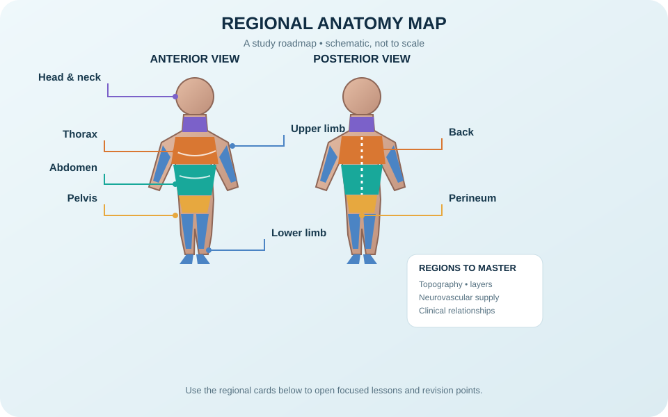

Regional anatomy of the head and neck

The head and neck contain the brain and sensory organs, upper aerodigestive passages, cervical vertebrae, major vessels, cranial nerves, endocrine structures and complex fascial compartments. The neck is commonly described through anterior and posterior triangles, which organise muscles, vessels, nerves and lymph nodes. The carotid sheath contains the common/internal carotid artery, internal jugular vein and vagus nerve. The pharynx conducts air and food; the larynx protects the airway and supports phonation. The thyroid lies anteriorly in the lower neck, while the parathyroid glands are usually on the posterior thyroid surface. Surface landmarks and careful side identification are essential.
Learning objectives
- Identify the major compartments and triangles of the neck.
- Describe the contents of the carotid sheath and the roles of the pharynx and larynx.
- Relate regional anatomy to airway, vascular and cranial-nerve assessment.
High-yield study points
- The sternocleidomastoid divides each side of the neck into anterior and posterior triangles.
- The carotid sheath contains the carotid artery, internal jugular vein and vagus nerve.
- The recurrent laryngeal nerves are important for intrinsic laryngeal muscle function and voice.
- Cervical lymph nodes drain regions of the head and neck and may enlarge with infection or other disease.
- The vertebral artery commonly enters the transverse foramina of cervical vertebrae, usually at C6.
Clinical connection
Neck masses, voice changes, swallowing difficulty and vascular injury require careful clinical assessment. Surface anatomy is useful but cannot replace imaging or specialist examination.
Regional anatomy self-test
- Why is the parotid gland clinically important in relation to the facial nerve?
Answer and explanation
The facial nerve passes through the parotid gland and divides into terminal branches within it, but it does not provide the gland's secretomotor supply. Parasympathetic secretomotor fibres to the parotid travel via CN IX, the tympanic plexus, lesser petrosal nerve, otic ganglion and auriculotemporal nerve.
- Which major vessels are palpated in the carotid triangle?
Answer and explanation
The common carotid artery and its bifurcation into internal and external carotid arteries are key contents. Palpation and clinical procedures require appropriate training; avoid forceful bilateral compression.
- Why can a lesion near the cavernous sinus affect more than one cranial nerve?
Answer and explanation
The cavernous sinus region contains or is closely related to CN III, IV, V1, V2, VI and the internal carotid artery with its sympathetic plexus; a single lesion can therefore produce a combination of ocular motor, sensory and sympathetic findings.
Further reading
OpenStax, Anatomy and Physiology 2e — nervous system and head/neck-related structures. Use a regional anatomy atlas to verify spatial relationships.